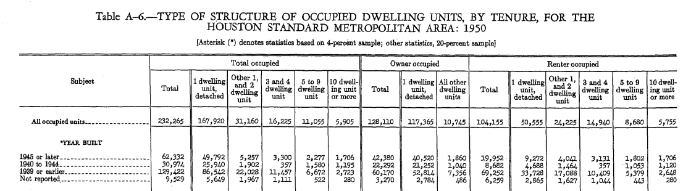
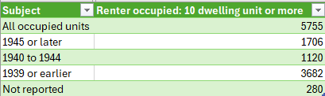
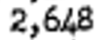
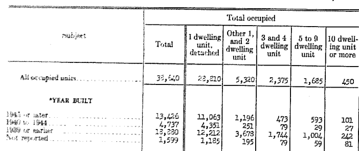
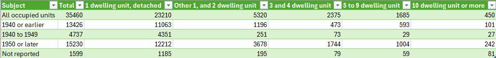
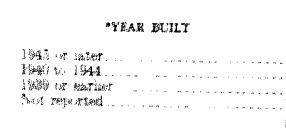

from openai import OpenAI
import os
import base64
import requests
from dotenv import load_dotenv
# Load API key
_ = load_dotenv()
def encode_image(image_path):
with open(image_path, "rb") as image_file:
return base64.b64encode(image_file.read()).decode('utf-8')
client = OpenAI()Introduction
Using historical data is pretty fun, but it often involves some grunt work. Sometimes data isn’t available in a tabular format and needs to be manually transcribed so that it is ready for analysis. Today, I’m going to build off my first blog post and see if LLMs are able to transcribe values of a table for me.
I’m going to continue working with the 1950 Census of Housing, linked here. Some of the scans are very easy for me to read, and others are fuzzier. Let’s see if GPT-4o is up for the test!
Warm-up exercise: an easy example
Let’s see if ChatGPT can read this clear scan. 
prompt = 'Describe this image of a table. Suppose you needed to transcribe the data into a .csv file. How many columns would the .csv file have, and what would their names be? How many rows would there be? Think it though. Then, transcribe the data into a semicolon delimited file'
base64_image = encode_image('img/img1.png')
response = client.chat.completions.create(
model="gpt-4o",
messages=[
{
"role": "user",
"content": [
{"type": "text", "text": prompt},
{
"type": "image_url",
"image_url": {
"url": f"data:image/jpeg;base64,{base64_image}"
},
},
],
}
],
)print(response.choices[0].message.content)To transcribe the data into a .csv file, you first need to understand the structure of the table. Here's the breakdown:
### Columns
There are 13 columns in the table with the following headers:
1. Subject
2. Total occupied: Total
3. Total occupied: 1 dwelling unit, detached
4. Total occupied: Other 1, and 2 dwelling unit
5. Total occupied: 3 and 4 dwelling unit
6. Total occupied: 5 to 9 dwelling unit
7. Total occupied: 10 dwelling unit or more
8. Owner occupied: Total
9. Owner occupied: 1 dwelling unit, detached
10. Owner occupied: All other dwelling units
11. Renter occupied: Total
12. Renter occupied: 1 dwelling unit, detached
13. Renter occupied: Other 1, and 2 dwelling unit
14. Renter occupied: 3 and 4 dwelling unit
15. Renter occupied: 5 to 9 dwelling unit
16. Renter occupied: 10 dwelling unit or more
### Rows
There are six rows in total:
1. Header row
2. All occupied units
3. 1945 or later
4. 1940 to 1944
5. 1939 or earlier
6. Not reported
Now, let's transcribe the data into a semicolon-delimited format:
```plaintext
Subject;Total occupied: Total;Total occupied: 1 dwelling unit, detached;Total occupied: Other 1, and 2 dwelling unit;Total occupied: 3 and 4 dwelling unit;Total occupied: 5 to 9 dwelling unit;Total occupied: 10 dwelling unit or more;Owner occupied: Total;Owner occupied: 1 dwelling unit, detached;Owner occupied: All other dwelling units;Renter occupied: Total;Renter occupied: 1 dwelling unit, detached;Renter occupied: Other 1, and 2 dwelling unit;Renter occupied: 3 and 4 dwelling unit;Renter occupied: 5 to 9 dwelling unit;Renter occupied: 10 dwelling unit or more
All occupied units;232,265;167,920;31,160;16,225;11,055;5,905;128,110;117,365;10,745;104,155;50,555;24,225;14,940;8,680;5,755
1945 or later;62,332;49,792;5,257;3,300;2,277;1,706;42,380;40,520;1,860;19,952;9,272;4,040;3,131;1,802;1,706
1940 to 1944;30,974;25,940;1,902;357;1,580;1,195;22,292;21,252;1,040;8,682;4,688;1,464;357;1,053;1,120
1939 or earlier;129,422;86,542;22,032;11,457;6,672;2,719;60,170;53,814;7,356;69,252;32,728;17,084;10,409;5,379;3,682
Not reported;9,529;5,649;1,967;1,111;522;280;3,270;2,784;486;6,259;2,865;1,627;1,044;443;280
```
Ensure each value is separated by a semicolon, and commas within numbers are preserved as shown.I’m pretty impressed with the output, but it’s not quite good enough to be able to trust 100% without double checking the numbers. I stared at the output for a little bit before realizing that one of the values in the bottom right of the pdf, 2,648, was transcribed as 3,682.


This is a little disheartening! Just to be sure, I’m going to ask ChatGPT to read only this one number specifically to see if the results improve. Maybe the size of the table it needed to transcribe seemed overwhelming, or the prompt I gave it was too long.
prompt = 'What number is this?'
base64_image = encode_image('img/img3.png')
completion = client.chat.completions.create(
model="gpt-4o",
n=3,
messages=[
{
"role": "user",
"content": [
{"type": "text", "text": prompt},
{
"type": "image_url",
"image_url": {
"url": f"data:image/jpeg;base64,{base64_image}"
},
},
],
}
],
)
response = completion.choices[0].message.contentfor rnum, resp in enumerate(completion.choices,1):
display((f'Response {rnum}: {resp.message.content}'))'Response 1: The number is 2,648.''Response 2: The number is 2,648.''Response 3: The number is 2,648.'Yes, ChatGPT, that’s correct! So maybe the issue was that I assigned too big of a task, making ChatGPT get “tired”.
The test
Given that my intended warm-up round was not exactly a walk in the park, I’m going to make sure to not give ChatGPT too many numbers to transcribe in one prompt. However, I do want to see how it handles fuzzy text. Let’s try with this image now.

The row names are pretty fuzzy, so I’m excited to see what the LLM is able to make out.
prompt = 'Describe this image of a table. Suppose you needed to transcribe the data into a .csv file. How many columns would the .csv file have, and what would their names be? How many rows would there be? Think it though. Then, transcribe the data into a semicolon delimited file'
base64_image = encode_image('img/img4.png')
response = client.chat.completions.create(
model="gpt-4o",
messages=[
{
"role": "user",
"content": [
{"type": "text", "text": prompt},
{
"type": "image_url",
"image_url": {
"url": f"data:image/jpeg;base64,{base64_image}"
},
},
],
}
],
)print(response.choices[0].message.content)To transcribe the table into a .csv file, we first identify the columns and rows.
### Columns
There are 7 columns in the table:
1. Subject
2. Total
3. 1 dwelling unit, detached
4. Other 1, and 2 dwelling unit
5. 3 and 4 dwelling unit
6. 5 to 9 dwelling unit
7. 10 dwelling unit or more
### Rows
There are 5 rows including the header row:
1. Header
2. All occupied units
3. Year built: 1940 or earlier
4. Year built: 1940 to 1949
5. Year built: 1950 or later
6. Year built: Not reported
### Transcription to a Semicolon Delimited File
Here's how the data would look in a semicolon-delimited format:
```
Subject;Total;1 dwelling unit, detached;Other 1, and 2 dwelling unit;3 and 4 dwelling unit;5 to 9 dwelling unit;10 dwelling unit or more
All occupied units;35,460;23,210;5,320;2,375;1,685;450
1940 or earlier;13,426;11,063;1,196;473;593;101
1940 to 1949;4,737;4,351;251;73;29;27
1950 or later;15,230;12,212;3,678;1,744;1,004;242
Not reported;1,599;1,185;195;79;59;81
```
This setup ensures the data is organized and easy to import into a program that can process .csv files.
The screenshot I provided was admittedly hard to read, but I thought ChatGPT would be able to make out the difference between the blurry “earlier” and the blurry “later”. Let’s see what happens if I focus its attention on these words.

prompt = 'There are 4 lines of text under the header "YEAR BUILT" in this image. What do they say? Reply only with your transcriptions of the text below the header "YEAR BUILT". Separate each of the 4 lines with quotations'
base64_image = encode_image('img/img6.png')
completion = client.chat.completions.create(
model="gpt-4o",
n=3,
messages=[
{
"role": "user",
"content": [
{"type": "text", "text": prompt},
{
"type": "image_url",
"image_url": {
"url": f"data:image/jpeg;base64,{base64_image}"
},
},
],
}
],
)
response = completion.choices[0].message.contentfor rnum, resp in enumerate(completion.choices,1):
display((f'Response {rnum}: {resp.message.content}'))'Response 1: "1949 or later" "1939 to 1948" "1938 or earlier" "Not reported"''Response 2: "1980 or later" "1940 to 1979" "1939 or earlier" "Not reported"''Response 3: "1949 or later" \n"1940 to 1949" \n"1939 or earlier" \n"Not reported"'This seems to just be a lot harder than I thought it would be. At least with its attention focused, it can consistently identify the word “later” vs the word “earlier”, which it was not able to do before. It’s impressive that the categories make sense looking at one response at a time, at least for the first 2 responses- there is no overlap between the year ranges, and all years are covered. This indicates some level of logical reasoning. The third response would be double counting 1949 data in two of its categories.
Finally, I’m curious to see if o1 will be any better than GPT-4o at this.
prompt = 'There are 4 lines of text under the header "YEAR BUILT" in this image. What do they say? Reply only with your transcriptions of the text below the header "YEAR BUILT". Separate each of the 4 lines with quotations'
base64_image = encode_image('img/img6.png')
completion = client.chat.completions.create(
model="o1",
n=3,
messages=[
{
"role": "user",
"content": [
{"type": "text", "text": prompt},
{
"type": "image_url",
"image_url": {
"url": f"data:image/jpeg;base64,{base64_image}"
},
},
],
}
],
)
response = completion.choices[0].message.contentfor rnum, resp in enumerate(completion.choices,1):
display((f'Response {rnum}: {resp.message.content}'))'Response 1: "1961 or later" \n"1939 to 1941" \n"1939 or earlier" \n"Not reported"''Response 2: "1949 or later" \n"1939 to 1944" \n"1939 or earlier" \n"Not reported" ''Response 3: "1939 or later" \n"1939 to 1941" \n"1939 or earlier" \n"Not reported" 'I wish I had timed it, but o1 took MUCH longer to run than GPT-4o. Response 2 here is the closest we have gotten so far, but the first line should say 1945. It’s crazy that all 3 responses got the third line correctly. Well, looks like humans are going to be transcribing historical data for at least a little while longer.